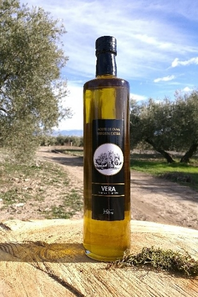
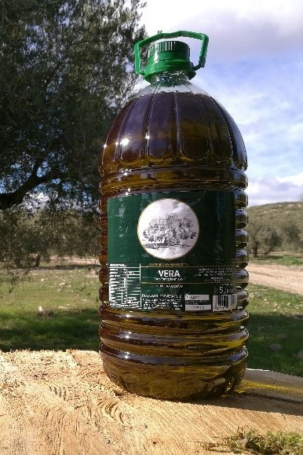
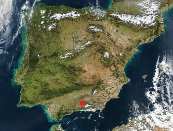
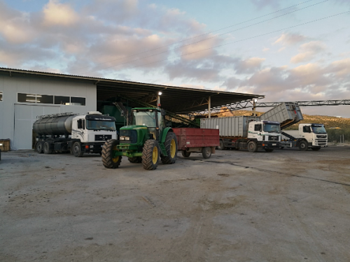
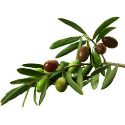

Vera es una almazara privada que, en manos de D. José Vera Miranda, comenzó su actividad en el año 1951, lo que la convierte en una de las almazaras más antiguas de Andalucía, que alcanza en la actualidad un nivel de producción en torno al millón de litros anual.
Desde el momento de su fundación, Vera ha centrado sus esfuerzos en la producción de aceite de oliva virgen extra de alta calidad, que se extrae en frio directamente de la aceituna y solo mediante procesos mecánicos, dando lugar a un zumo de aceituna natural de un sabor intenso y frutado.
Ello se consigue en unas instalaciones muy distintas a las originales de 1951, que contaban con molinos de piedra y prensas mecánicas, en un proceso de extracción discontinua.
Las amplias y modernas instalaciones actuales se pusieron en funcionamiento en la campaña 2016/2017. Se localizan en la parte noroccidental de la comarca de la Vega de Granada (Andalucía, España), concretamente en Pinos Puente, donde el clima es idóneo para el crecimiento del olivo, siendo la variedad de aceituna predominante de esta zona la picual.
Una amplia experiencia en este sector, que se ha transmitido de generación en generación hasta hoy, da como resultado un trato excepcional a clientes y proveedores, prestando no solo todos los servicios habituales sino también otras facilidades como el transporte de la aceituna del agricultor o la recogida de poda.
|  |  |
|
|
|
Ideales para acompañar platos variados y como regalo. |
Garrafa individual o cajas de tres unidades. |
|

Las amplias instalaciones cuentan con un acceso directodesde la carretera A-336. |
Permiten una perfecta maniobrabilidad en su interior,facilitando la entrada, la descarga y la salida de los vehículos.  |
|
|
|
|
Servicio de recogida de la aceituna del agricultor,directamente en el campo si éste lo solicita. |
 |
La empresa cuenta con un servicio de limpieza deterrenos de cultivo para la recogida de los restos de poday su transporte al parque de almacenamiento.Pulse aquí para más información. |
La almazara Vera y la empresa Vera & Gallego Energía, trabajando conjuntamente, cuentan con la infraestructura necesaria para un aprovechamiento integral del olivo, respetando el entorno medioambiental y el ciclo de vida de los árboles.
LOCALIZACIÓN |
ESCRÍBENOS |
Carretera A-336 km 19 Zujaira (Pinos Puente, Granada)Código Postal: 18291Teléfono de contacto: 958 46 12 84 / 639 72 93 53Correo electrónico: vera.ingenieria@gmail.com
tel. 958 46 12 84 / 639 72 93 53; Carretera A-336 km 19 Granada (España)